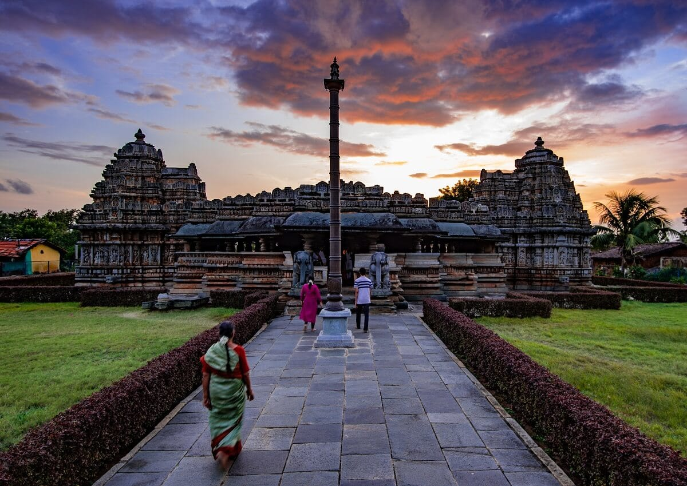
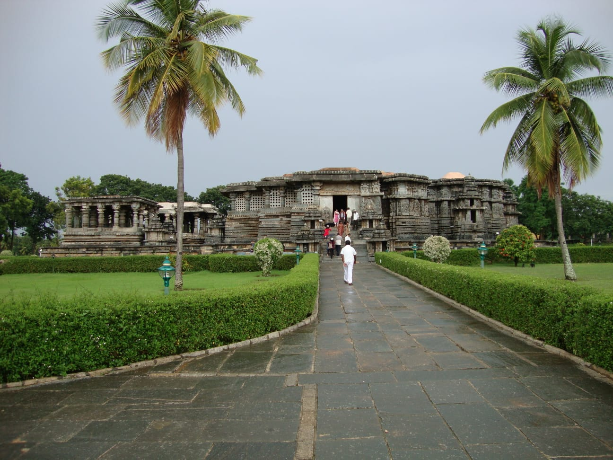

Belur and Halebidu: Explore Karnataka's Hoysala Heritage
Discover remarkable stone carvings, historic temple architecture
and practical travel tips for planning a memorable heritage
journey through Belur and Halebidu.
Belur and Halebidu are two of Karnataka's most remarkable
destinations for travellers interested in history,
architecture and cultural heritage. Their celebrated Hoysala
temples feature elaborate stone carvings, sculpted figures
and decorative details that reflect generations of skilled
craftsmanship.
Located in the Hassan region of Karnataka, the two historic
temple sites can be included in the same heritage itinerary.
Visiting both gives you an opportunity to appreciate their
architectural similarities while observing the distinctive
details of each monument.
If you are planning a road trip from Mangalore, allow enough
time for the drive, sightseeing and meal breaks. A relaxed
itinerary is generally more rewarding than trying to fit
too many destinations into one day.
The Chennakeshava Temple is Belur's best-known historic
attraction. Commissioned during the Hoysala period, the
temple is admired for its intricate sculptural decoration,
ornamental details and carefully executed stonework.
As you explore the complex, look for the elaborate figures,
decorative bands and sculpted details around the temple.
The craftsmanship is best appreciated when you take your
time rather than treating the monument as a quick
photography stop.
The temple is also an important place of worship. Visitors
should follow the site's instructions, respect religious
practices and observe any restrictions on photography or
access.

Add the photograph at assets/blogs/chennakeshava-temple-belur.jpg.
'">
Belur's Chennakeshava Temple is renowned for its detailed
Hoysala-era stone craftsmanship.
What should you look for in Belur?
Detailed stone sculptures and ornamental designs.
Decorative features around the temple exterior.
Architectural elements that reward careful observation.
The atmosphere of a historic temple that remains a place of worship.
A knowledgeable, authorised guide may help you understand
the historical background and meaning of selected
architectural features. Check guide availability and
applicable charges locally.
2. Hoysaleswara Temple, Halebidu
Halebidu is home to the Hoysaleswara Temple, another
outstanding example of Hoysala temple architecture. Its
richly decorated exterior features rows of sculptures and
detailed panels that invite visitors to examine the
craftsmanship closely.
Compared with a hurried visit, walking around the accessible
sections at a comfortable pace gives you more opportunities
to appreciate the variety of figures, decorative patterns
and sculptural compositions.
Take care around the historic structures. Do not climb on
monuments, touch fragile carvings unnecessarily or cross
protective barriers. Follow instructions from site staff
and respect other visitors.

Add the photograph at assets/blogs/hoysaleswara-temple-halebidu.jpg.'">
Halebidu's Hoysaleswara Temple is celebrated for its
elaborate sculptural panels and historic stonework.
Highlights of a visit to Halebidu
Observe the temple's extensive sculptural decoration.
Compare the architectural details with those at Belur.
Allow time to explore the accessible areas without rushing.
Learn about the region's Hoysala heritage and artistic traditions.
3. Understanding Hoysala Architecture
Hoysala architecture is known for elaborate stone
ornamentation, detailed sculpture and carefully arranged
decorative elements. At Belur and Halebidu, these features
turn the temple surfaces into an extensive display of
artistic workmanship.
Rather than concentrating only on the main entrance or
popular photo locations, look at the different sculptural
bands and ornamental details where access is permitted.
Small details can reveal the care and technical skill
involved in working the stone.
Belur and Halebidu are recognised internationally for their
Hoysala heritage. In 2023, the Sacred Ensembles of the
Hoysalas were inscribed on the UNESCO World Heritage List.
This recognition includes Belur, Halebidu and Somanathapura.
The following is a flexible sightseeing outline, not a
guaranteed timetable. Actual departure times depend on your
starting point, road conditions, opening hours and the
amount of time you want to spend at each temple.
Morning — Belur:
Begin with Chennakeshava Temple. Allow time to walk around
the complex, examine the carvings and learn about its
architecture.
Midday — Meal break and onward drive:
Take a meal break and continue towards Halebidu. Check
current road conditions and allow time for the journey.
Afternoon — Halebidu:
Visit Hoysaleswara Temple and explore the accessible
sections at a relaxed pace.
Evening — Return or overnight stay:
Decide whether to continue to your accommodation or begin
your return journey, based on your starting point and
remaining daylight.
Travellers coming from Mangalore should plan the driving
time in both directions before deciding whether a same-day
trip is practical. An overnight stay may offer a more
comfortable experience, especially for families, senior
travellers and visitors who prefer an unhurried itinerary.
5. Planning a Heritage Trip from Mangalore
A road trip from Mangalore to Belur and Halebidu involves
travel across Karnataka, so planning your pickup time,
sightseeing order and return journey is important. Check
current route conditions before departure rather than
relying on a fixed travel-time estimate.
Before arranging transport, consider the following:
Your pickup location and preferred departure date.
The number of passengers and amount of luggage.
Whether you want to visit both temples on the same day.
Whether an overnight stay is part of your plan.
Your preferred vehicle type and comfort requirements.
The expected trip duration and applicable charges.
Radhakrishna Taxi Service accepts enquiries for journeys
from Mangalore to heritage destinations across Karnataka.
Share your proposed itinerary and passenger details to
request vehicle availability and a quotation.
Planning Your Belur and Halebidu Journey?
Contact Radhakrishna Taxi Service to discuss your
preferred dates, pickup point, vehicle requirements
and heritage sightseeing plan.
Check opening hours:
Confirm current visiting hours, access arrangements
and local restrictions before leaving.
Wear comfortable footwear:
You may spend a considerable amount of time walking
around the temple complexes.
Carry water:
Bring drinking water and plan breaks, particularly
during warmer weather.
Dress respectfully:
Remember that these are important religious and
cultural places.
Respect conservation rules:
Do not climb on monuments or touch protected
architectural features.
Confirm photography rules:
Restrictions can differ between areas and may change.
Keep your schedule flexible:
Allow time for meals, traffic, parking and walking.
Plan for everyone:
Consider the walking distance, rest breaks and
accessibility needs of the people travelling with you.
7. Can You Include Other Places?
Depending on your route and available time, you may be able
to include other cultural or heritage attractions in the
wider region. However, adding several distant destinations
can make the day tiring and leave little time to appreciate
the temples.
If Belur and Halebidu are the main purpose of your trip,
consider keeping the itinerary focused. If you have
additional days, plan other destinations separately after
checking their locations, opening hours and travel
requirements.
Belur and Halebidu are known for their Hoysala-era
temples, intricate stone sculptures and distinctive
architectural craftsmanship.
2. Can I visit Belur and Halebidu in one day?
Many visitors plan to see both places in one day.
Whether this is comfortable depends on your starting
location, road conditions, temple visiting hours and
how much time you want to spend at each site.
3. How much time should I allow for sightseeing?
Allow enough time to explore both temple complexes
without rushing. Your total schedule should also
include travel between the sites, meals and any
waiting time.
4. Is a guide useful at Belur and Halebidu?
A knowledgeable, authorised guide can help explain
historical context, sculptural details and architectural
features. Confirm local availability and charges.
5. Can I plan a Belur and Halebidu trip from Mangalore?
Yes. Plan the road journey carefully, check current
conditions and consider an overnight stay if you want
more time for sightseeing and a comfortable return.
6. What should I confirm before booking a taxi?
Confirm vehicle availability, pickup and drop-off
locations, planned duration, sightseeing stops,
overnight requirements and all applicable charges
before finalising your journey.
Travel information is provided for general planning.
Opening hours, access arrangements, guide availability
and visitor rules can change. Verify current details
before departure.